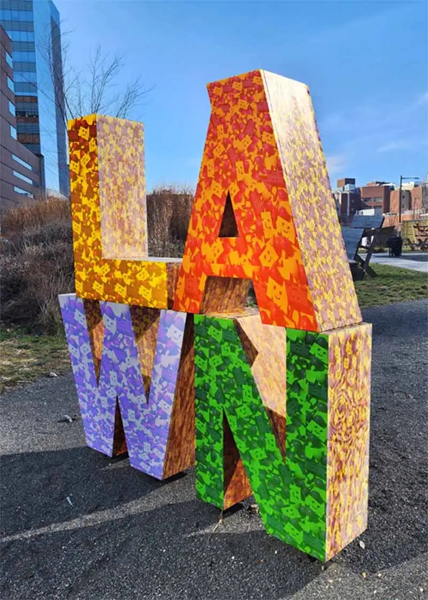

Hey there! Throughout high school and college, here is the creative work that I have produced through a variety of mediums.
Plush Monsters | 2021

Using Photoshop to apply patterns to the real world | 2023Observational Drawing of My Sister | 2021Self Reflection, Mixed Media | 2021Still Life and Observational Drawing| 2021Applying illustrated motifs to a building | 2022Photograph of URBN Center | 2023Photography showcasing scale | 2022Photography showing a geometric form | 2022Portrait of my Dad as a Student! | 2020